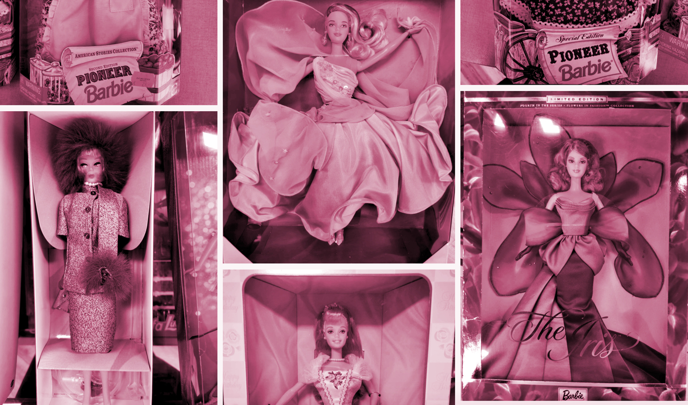

November 2020 - For over 20 years I have been haunting the net buying Barbies online. Finding your grail doll in a hidden spot and waiting for her shipment to arrive has been a thrill to many of us who are or were deprived of real life conventions or trusted retailers.
In this blog and strictly from my experience I want to share some essential insights with you on what to watch out for when you go on a collectible doll hunt in the world wide web.

Click on the ▸ ARROW to reveal additional sections!
The two no. 1 rules ❤︎ (click on the arrow to expand)
If you are unsure about the overall quality of the item, if the pictures are blurry or the seller seems inexperienced and doesn't have a concise description of the selling process in place, it may be wise to apply the two no. 1 rules:
Ask questions! Most sellers are willing to answer, and if they don't, it is usually a sign you may as well refrain from the transaction. Even if the offer seems great and it is your dream doll: better safe than sorry!
(Unless you have huge amounts of money to spend and don't bother an occasional hickup. Then by all means, go ahead and throw your money at them! :D)
Ask for more fotos! This is another number one rule of buying Barbies from supposed strangers. Unless it is ebay or etsy where the seller already (and hopefully) presents the product from many angles (including the box and the doll's face), better ask for further fotos to make sure that
A. the seller has the item on hand and
B. they are the initial author of the listing.
There is nothing wrong with the seller selling goods that may yet arrive at their place or that are located in another collector's home. This is information you should get though, since it is on you to decide if you want to calculate the risk of receiving a doll in a condition that has not been further disclosed upon buying. This may be the case with some grail dolls that are offered for a good price, where simply attaining and restoring them in case they show flaws is already satisfying enough.
From the sellers' perspective I can tell you that it is ok to fulfill an additional request (for more pictures), some potential buyers keep asking for multiple fotos though and request further actions whilst ending up not buying anything.
Though this is a risk every seller has to take, if you want to build stable, fruitful and pleasant relationships with your future suppliers, you may want to watch out not to get on people's nerves and take advantage of their kindness.
The hidden problem areas
💇🏼♀️ Missing hairplugs are always something to inspect on pictures or ask for if you are looking for a quality doll.
🤯Glue head is another phenomenon that appeared in the 00's and reached even high level model muse collector dolls. At some point Mattel was experimenting with a new method of keeping the hair well attached using glue spread inside the hollow doll head.
Sadly, this experiment went awfully wrong and left children as well as adult collectors with dolls that had seemingly greasy hair, which in reality was sticky and full of glue that was seeping through Barbie's scalp.
This affected the articulated fashionistas, model muse dolls from The Look series and many others.
Below you can see a Nikki fashionista head that I cut up. It shows the glue accumulating underneath.
This poses not only a problem while handling the doll and getting all sticky yourself. Usually the issue comes up when performing a head swap. The glue heads are ridiculously tough to remove from their respective bodies since they tend to be glued unto the neck peg as well.
I myself have managed to damage quite a number of dolls when I was still unaware of the glue problem. Heating up helps while head swapping, as well as using tweezers to lift the head.
Sadly, it is quite time consuming to get rid of the glue in Barbie's hair. Shampooing thoroughly, then adding baking soda powder mixed with vegetable oil to rub it out helps. Just make sure to use some oil-remover in the end, otherwise you just swap glue-hair for oil-hair.
👄 Chipped off facepaint is another thing that can go unseen on pictures and needs to be checked on in case you want a well preserved Barbie that is not an OOAK project of yours.
🦵🏼 Disintegrating plastic on rubber legs is a common issue with some 80ies dolls and shows up as lighter colored circular stains along the doll's legs. It can be a health hazard and is not ideal, so unless you want to just display and not handle the doll a lot or you need her other parts for a project, better stay away.
What I have realized furthermore, is that mold loves to linger in those spots. The liquid plastic parts seem to offer a breeding ground for it, so make sure you sanitize those areas thoroghly in case you want to keep the doll!
👉🏼After swiping them with 70% alcohol, acne cream with 10% benzoyl peroxide and lots of sun will usually do the trick.
👂🏻 Green ear in vintage dolls hints sometimes at a fungus or metal on plastic problem and appears often in older vintage dolls. There are remedies for it, though they are time consuming and require some knowledge in doll repair and therefore could cost you unnecessary time and bother.
📍 Bites or needle marks on hands and feet (mostly) of unboxed dolls. Some children play brutally, some households have cats or dogs who take an excessive interest in Barbies and chew on them regularly simply for the fun of it. Those tiny damages are sometimes hard to spot and if you do not trust on the listing to give you a proper info on the bitemark-status of a doll, better ask twice.
👃🏼 Smells and odors. Dolls who have spent most of their time in attics, cellars or places that did not protect them from moisture, dirt and other inappropriate conditions, can take on an unpleasant smell. Most of it can be aired out or removed with various methods (from cat litter to newspaper to essential oil treatment, and so on). Those remedies are a popular topic amongst collectors and are regularly discussed in online forums.
Sometimes you can suspect a foul smell by just the look of the doll or the way the foto was shot (untidy environment, frizzy hair, or even the mention that it was found in the attic). If you want to make sure there is no smell, again: ASK.
🐜 Little bugs. Can happen. Have happened to me. Once I even managed to get one out that was seated in the middle of the ballgown of a boxed doll (I slightly opened the side of the box and slid in long/thin tweezers that did the trick and lifted it out). It was tiny, dead and probably an ant. You have to assess your own limits to what disgusts and worries you. Bugs can infest your house so make sure there are not many - ideally only a single one - and that they are DEAD.
Additionally swiping boxes with alcohol wipes is always a good idea, not only in times of COVID-19.
(lashes picture found on aliexpress)
It better not be mold or mildew! 😱
It is the biggest fear of every collector and a hidden risk that accompanies some online purchases of older boxed dolls. I myself have recently fallen victim and I must say it was beyond unpleasant.
Seeing your grail doll's legs covered in green fungus is one hell of a nightmare. Some people still try to salvage dolls in this state, I would highly suggest trashing the doll if she shows green or black fungus since it can be a serious health hazard.
Not to mention that the greyish-black and sometimes green stains on soft rubber are almost impossible to remove and the task seems pointless once both legs are showing numerous dots.
But how to prevent buying a moldy doll? (click on the arrow to expand)
Signs to look for can be:
Brown spots on the cardboard of the box. They present as irregular stains and can be present next to clear signs of water damage, usually even on the outside e.g. the back of the box.
White spots that resemble velvet or snow on the face or legs of the doll. If you are lucky, those are just lint or fibers from the doll's white clothing. If the pattern is regular and looks like white dust or little white dots, chances are high that the box is full of mildew that spreads all over the doll. It may be a precursor to bigger patches of mold hidden under the clothing.
Stains on the clothing (most easily seen if they are dark against light dresses) in weird shapes and with dustlike texture can be a hint of mold if the doll is NRFB and still inside the box.
Your nose is the indicator! Sadly it is already too late when you hold the box in your hands and smell a moldy scent that may give away the ugly surprise that awaits you inside.
Unfortunately, as of late (01/21) I have experienced perfectly pristine looking boxes to contain moldy dolls nonetheless. I purchased some 70s dolls on ebay and decided to remove them to enjoy their presence. The cardboard of the boxes had spots on the inside and their rubber legs had discolorations with slight dark mold on them. You can never be safe, it seems. I may slowly begin to understand the preference of some local collectors who only go for deboxed/loose dolls.
The conclusion
All in all, buying dolls online can be an exciting thing to do and sometimes being patient pays off. You cannot always prevent problems from arising, but being slightly cautious can never be wrong. The topic of payment online is a whole other universe. Many collectors go by the rule "PayPal Goods & Services or we don't have a deal". PayPal indeed has some well functioning buyer protection in place. I am sure that in the future various other applications will be on the rise and we Barbie collectors will have to find the best options for us to stay safe while buying and to leave no space for scammers.
Enjoy your doll hunt online, ⤵️ check out my listings 💕 and share this article if you want to discuss it with fellow Barbie lovers, friends or family! Stay safe.
Love Dolls, Drops, Thoughts and Stories?
Join the DodaDolls newsletter for new blog posts, special releases, and curated Barbie madness.
Only meaningful updates, carefully curated.
✨ Join the DodaDolls Newsletter